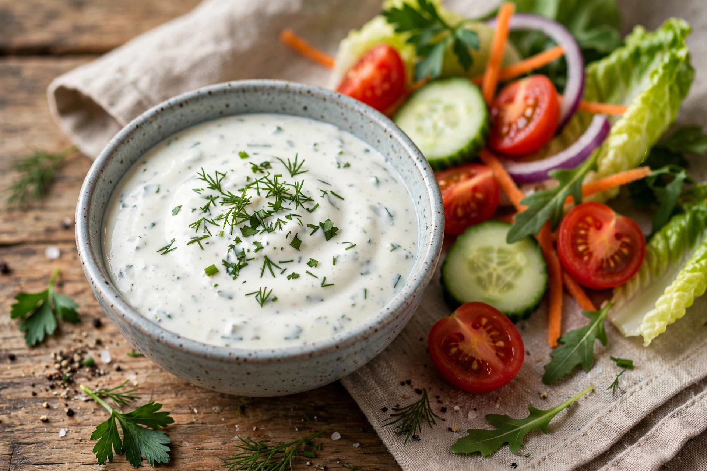

Ranch dressing
| Ranch dressing | |
|---|---|
 | |
| Type | Salad dressing / dip |
| Place of origin | United States |
| Created | Early 1950s, by Steve Henson |
| Main ingredients | Buttermilk, mayonnaise, salt, garlic, onion, mustard, herbs (parsley, dill, chives), spices |
Ranch dressing is an American salad dressing and dip usually made from buttermilk, salt, garlic, onion, mustard, herbs and spices mixed into a mayonnaise or oil-based sauce. It has been the best-selling salad dressing in the United States since 1992, and "ranch" flavouring is widely used on snacks such as chips and pretzels, as well as a dip for pizza, fried foods and vegetables.
History
The dressing was created in the early 1950s by Steve Henson, a plumbing contractor working in Alaska who served it to his work crews. In 1954 Henson and his wife Gayle bought a guest ranch near Santa Barbara, California, which they named Hidden Valley Ranch, and the dressing served there became so popular that guests asked for it to take home. The Hensons began selling packets of dry seasoning mix by mail order, incorporated the Hidden Valley business, and opened a factory; the brand was sold to the Clorox Company in 1973 for about $8 million. A shelf-stable bottled version, requiring no refrigeration, was introduced in 1983 and drove mass adoption.
Composition and use
Traditional ranch combines buttermilk and mayonnaise with garlic, onion, mustard, black pepper and fresh or dried herbs, commonly parsley, dill and chives; monosodium glutamate was a prominent ingredient in the original mix. Beyond salads, ranch is used in the United States as a dip for chicken wings, pizza, french fries and raw vegetables, and as a coating or seasoning in snacks and fast food. Variations include spicy, bacon, avocado and barbecue-ranch versions, as well as dry "ranch seasoning" for popcorn and roasted foods.
Popularity
Ranch surpassed Italian dressing as America's top-selling dressing in 1992 and has frequently been described as a defining flavour of contemporary American food culture, spawning dedicated cookbooks, restaurant items and fan merchandise, despite a reputation among critics as a strongly processed flavour.